Evidências: o que cada print prova
Cada imagem responde a uma exigência do edital. Saber qual mostrar em cada momento é tão importante quanto saber o que ela significa — a apresentação fica muito mais forte quando o print aparece no instante certo.
Dos 21 prints, nove aparecem na apresentação do projeto (o PDF que está na Área de Trabalho).
São eles: ProcessManagerAPI-terminal.png (slide 4), paginaNavegador.png (slide 5),
hostPID_kubernete.png (slide 6), 5pods.png (slide 7), nginx-k8s.png (slide 8),
RecriacaoPod.png (slide 9), hpa.png e replicas.png (slide 10) e
replicasVoltando2.png (slide 11).
O que fazer com isso: são esses nove que a banca vai ver na tela — então são os que você precisa explicar de olhos fechados. Os outros 12 são prova extra (valem no artigo e no anexo), mas não aparecem no slide. O mapa completo está em Quais prints estão no slide.
Não mostre os 21 prints. Mostre seis, nesta ordem: 5pods.png (o ambiente existe),
hostPID_kubernete.png (a API vê o SO), nginx-k8s.png (os 3 daemons funcionam no cluster),
RecriacaoPod.png (self-healing), hpa.png (scaling) e replicasVoltando2.png (volta ao normal).
Os seis estão nos slides — dá para narrar apontando para a tela sem trocar de arquivo.
Cada tarefa foi registrada pelo integrante responsável — por isso o hostname do terminal muda entre os prints
(diogo@... na Tarefa 1, rickd@... nas Tarefas 2 e 3). Os prints da Tarefa 3 formam o
ambiente de referência da demonstração: são todos do mesmo cluster, na mesma máquina.
Quais prints estão no slide
Este é o mapa direto entre o print e o slide em que ele aparece. Se você tiver pouco tempo, revise primeiro a coluna do meio.
| Slide | O que aquele slide defende | |
|---|---|---|
ProcessManagerAPI-terminal.png | 4 | Arquitetura de acesso: Service NodePort na 30080 e o túnel do minikube service. |
paginaNavegador.png | 5 | API FastAPI + psutil: os quatro endpoints documentados no Swagger. |
hostPID_kubernete.png | 6 | Isolamento e hostPID: a API lendo os processos do nó. |
5pods.png | 7 | Deploy base aplicado: 5 Pods Running. |
nginx-k8s.png | 8 | Serviços em segundo plano: Nginx + cron rodando no cluster. |
RecriacaoPod.png | 9 | Tolerância a falhas: o Pod recriado em 9 s. |
hpa.png | 10 | HPA: CPU de 2% a 204% e réplicas de 2 a 10. |
replicas.png | 10 | HPA: os Pods realmente criados (não só o número mudando). |
replicasVoltando2.png | 11 | Economia de recursos: o scale-down de volta para 2. |
O Swagger que aparece no slide é o local (127.0.0.1:8000/docs) — print
paginaNavegador.png. O Swagger de dentro do cluster é o ProcessManagerAPI.png,
que não está no slide. Se a banca perguntar "esse Swagger é do cluster?", a resposta correta é:
"este do slide é o local; o do cluster é este outro", e aí você abre o ProcessManagerAPI.png.
Tarefa 1 — API FastAPI + psutil
Print de: terminal do integrante da Tarefa 1 (diogo@), rodando no WSL — ainda sem Docker.
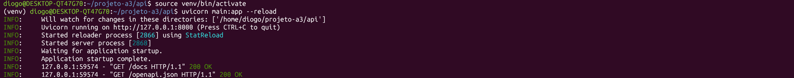
"Isso é local ou no cluster?" — Local. Serve para mostrar que o código funciona antes da containerização; a prova no cluster é o ProcessManagerAPI.png.
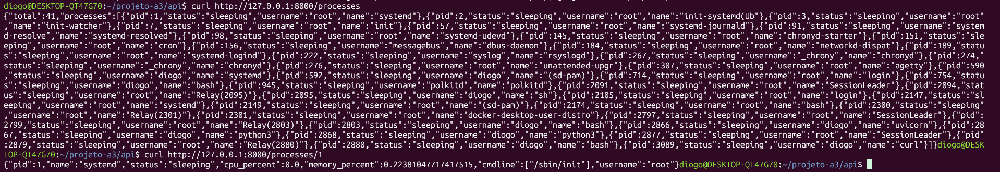
curl na mesma tela — /processes devolvendo 41 processos e /processes/1 devolvendo o systemd com CPU, memória e linha de comando.
Por que importa: prova que a API lê o sistema operacional de verdade (via psutil) e devolve JSON com os campos que o edital pede.
Quem agiu: o psutil, que lê a pasta /proc do Linux; e o systemd, que é o processo de crachá número 1 do sistema.
"Por que o PID 1 é o systemd?" — Porque este teste rodou no WSL, sem container. No Pod da API, com hostPID: true, o processo entra no namespace de PID do nó e o PID 1 visível continua sendo o systemd; sem hostPID, o uvicorn é que seria o PID 1 do container. São três cenários diferentes, e confundir os três é uma pegadinha clássica.
Um print mostra 41 processos e outro mostra 40. Não é erro: processos nascem e morrem o tempo todo, e cada chamada é uma fotografia do instante. O que importa é a ordem de grandeza e o fato de aparecerem processos do SO.
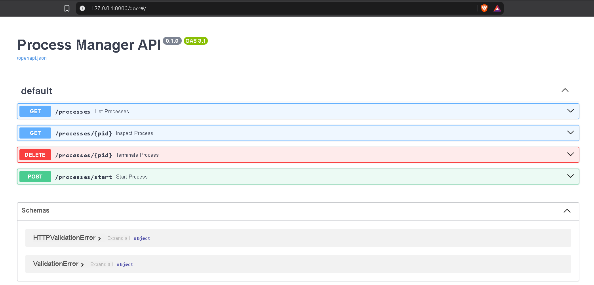
127.0.0.1:8000/docs com as quatro rotas: dois GET, um DELETE e um POST.
Por que importa: cumpre os quatro requisitos do edital numa imagem só — e mostra que a documentação é gerada sozinha, não escrita à mão.
Quem agiu: o FastAPI, que lê os type hints do código e monta o OpenAPI/Swagger automaticamente.
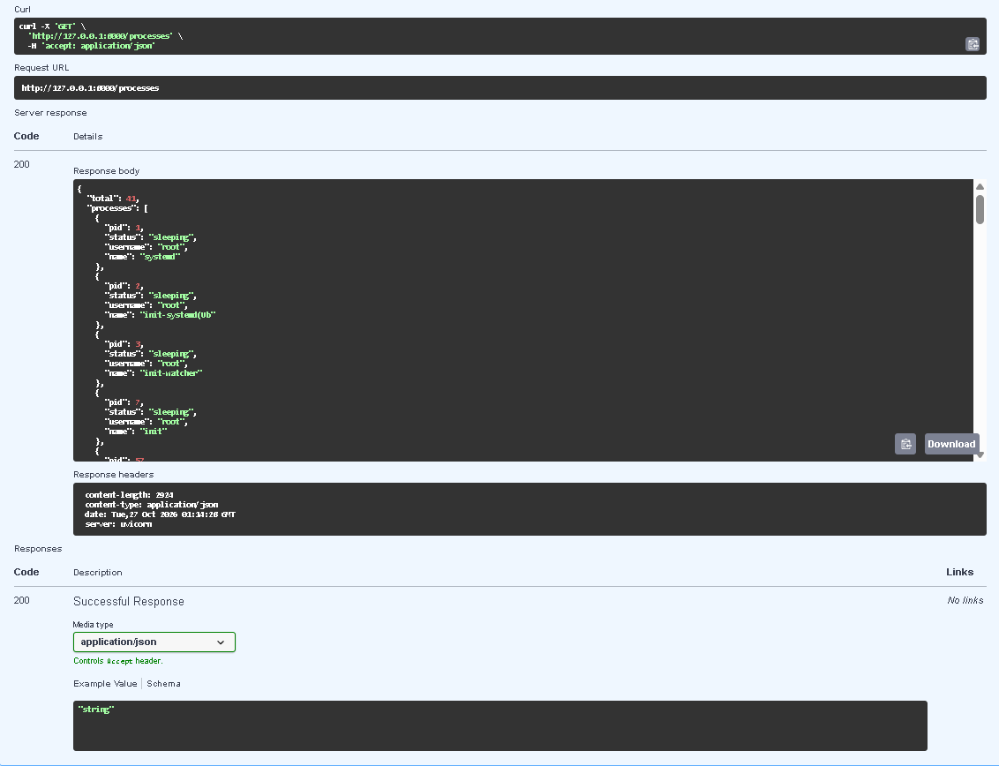
200 OK com o JSON logo abaixo.
Por que importa: prova que o Swagger é executável, não decorativo — qualquer um testa a API pelo navegador.
Quem agiu: o próprio FastAPI, que trata a chamada como se fosse um curl; o navegador é só o cliente.
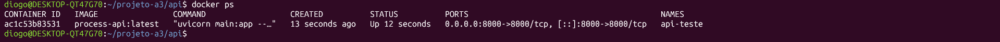
docker ps com o container api-teste no ar, expondo a porta 8000.
Por que importa: é a transição do "funciona no Python" para o "funciona empacotado" — a API virou imagem e rodou como container.
Quem agiu: o Docker (via containerd), que criou o container a partir da imagem process-api.
Tarefa 2 — Nginx e Cron
Print de: terminal do integrante da Tarefa 2 (rickd@), ainda em Docker puro — antes do Kubernetes.
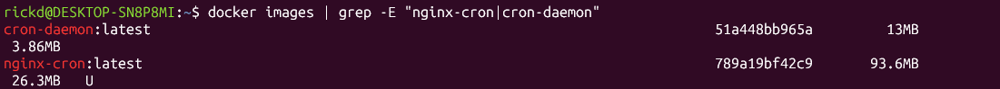
docker images com cron-daemon:latest (13 MB) e nginx-cron:latest (93,6 MB).
Por que importa: prova que as imagens existem com os nomes exatos que os YAMLs usam — nome errado aqui viraria ErrImageNeverPull no cluster. A diferença de tamanho é o peso da base: Alpine puro contra nginx:alpine.
Quem agiu: o docker build, lendo cada Dockerfile e montando as camadas da imagem.
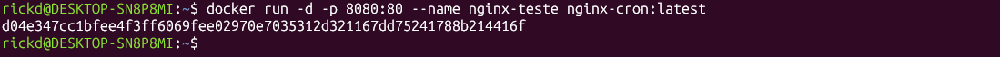
docker run -d -p 8080:80 --name nginx-teste nginx-cron:latest sendo executado.
Por que importa: prova que a imagem é executável e que a porta 80 do container foi publicada como 8080 na máquina.
Quem agiu: o Docker, que criou o container e configurou o redirecionamento de porta; dentro dele, o script de entrada sobe nginx + crond.
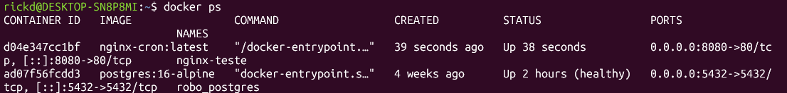
nginx-teste no docker ps, em 0.0.0.0:8080->80/tcp.
Por que importa: prova que o daemon web sobe sozinho e permanece no ar — se o processo principal morresse, o container apareceria como Exited.
Quem agiu: o nginx rodando em primeiro plano (daemon off), que é o que mantém o container vivo.
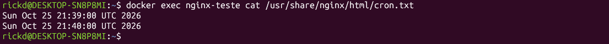
docker exec ... cat cron.txt com duas linhas de horário (21:39 e 21:40).
Por que importa: prova que o crond dentro do container do Nginx executou duas vezes, com exatamente um minuto de diferença — não é arquivo estático.
Quem agiu: o crond (BusyBox), que roda em segundo plano com -b enquanto o nginx é o processo principal.
"Como você sabe que o cron rodou e não que o arquivo já existia?" — Duas linhas com um minuto exato de diferença e o horário do teste. Um arquivo estático teria uma linha só.
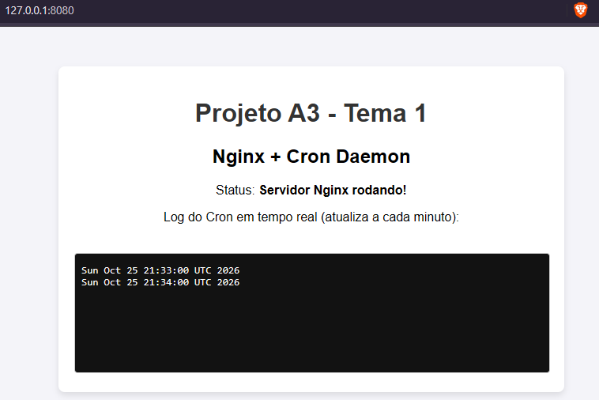
iframe exibindo o log do cron.
Por que importa: prova a integração Nginx + cron (dois daemons, um container) — mas via Docker, não no cluster.
Quem agiu: o nginx entregando a página e o crond escrevendo o arquivo na pasta pública.
docker exec cron-teste cat /var/log/cron-task.log com o horário de execução.
Por que importa: prova o terceiro daemon, isolado do Nginx e com seu próprio arquivo de log.
Quem agiu: o crond do container Alpine, rodando em primeiro plano (-f) porque ali ele é o único processo.
Tarefa 3 — Kubernetes
Print de: terminal do integrante da Tarefa 3 (rickd@), no cluster Minikube — todos do mesmo ambiente.
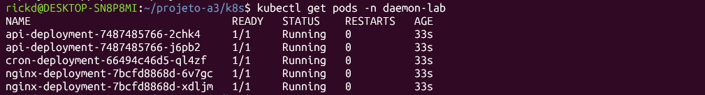
Running e com 0 restarts.
Por que importa: prova o deploy base e a existência dos três tipos de daemon dentro do cluster.
Quem agiu: os três Deployments — cada um criou seu ReplicaSet, que por sua vez criou os Pods.
"Por que 5 Pods se o edital pede 3 containers?" — Porque são 3 workloads (3 imagens, 3 tipos de daemon); as réplicas são uma decisão de disponibilidade. O edital pede no mínimo 3 containers com daemons diferentes. Na contagem de processos, são 4 daemons: uvicorn, nginx, o crond dentro do container do Nginx e o crond isolado — o crond aparece duas vezes de propósito.
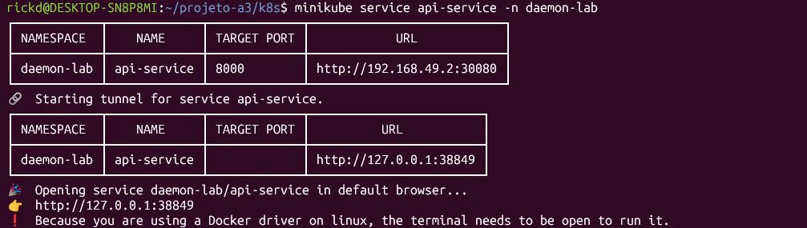
minikube service api-service mostrando o endereço 192.168.49.2:30080 e abrindo o túnel 127.0.0.1:38849.
Por que importa: prova o Service do tipo NodePort funcionando e explica por que o navegador do Windows precisa do túnel (o IP do Minikube não é acessível direto).
Quem agiu: o api-service + kube-proxy, que encaminham a porta 30080 do nó para a 8000 do Pod.
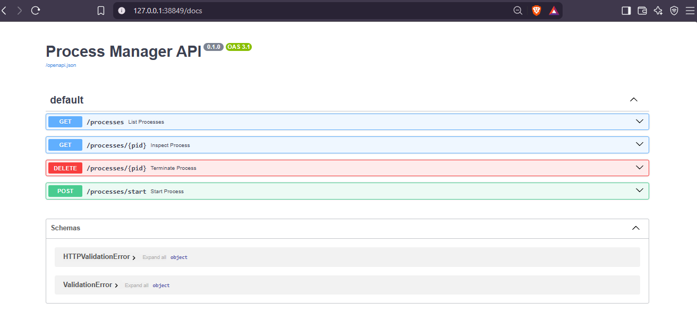
127.0.0.1:38849 — que é o túnel para o Pod dentro do cluster.
Por que importa: prova que a API está rodando dentro do Kubernetes, servida pelo Service, e não mais no Python local.
Quem agiu: o Pod da API (uvicorn) atendendo a requisição que chegou pelo NodePort.
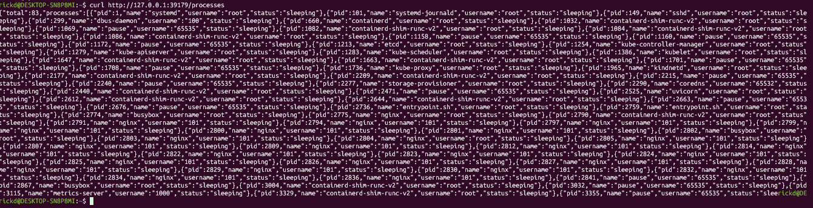
curl .../processes retornando 83 processos, entre eles kube-apiserver, kube-scheduler, etcd, kubelet, kube-proxy, containerd-shim-runc-v2, pause e até os processos dos outros containers (nginx, crond, busybox).
Por que importa: é a prova central do hostPID: true. Sem ele, a lista teria 3 ou 4 processos — só os do próprio container.
Quem agiu: o hostPID do Pod (que compartilha o namespace de PID do nó) + o psutil lendo /proc.
"Como você prova que a API vê o SO e não só o container?" — Porque aparecem processos que não poderiam existir dentro do container: o kubelet, o etcd e o kube-apiserver são do nó. Sem hostPID, a lista teria 3 ou 4 processos.
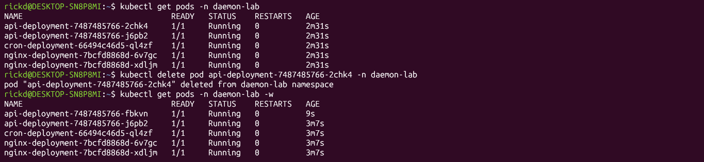
delete pod ...-2chk4 e, logo depois, o ...-fbkvn já Running, com 9 segundos de idade.
Por que importa: prova o self-healing: ninguém digitou "crie outro" — o cluster fez sozinho.
Quem agiu: o ReplicaSet controller. Ele comparou o desejado (2) com o real (1) e criou o Pod novo; o kubelet só executou o que o control plane mandou.
"Quem criou o Pod novo?" — O ReplicaSet controller, não o kubelet. O kubelet só executou o Pod que o control plane criou.
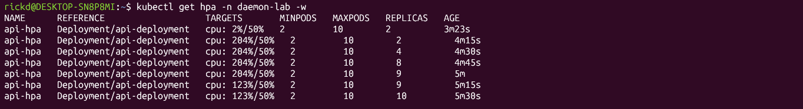
kubectl get hpa -w com a CPU indo de 2% a 204% contra o alvo de 50%, e as réplicas subindo 2 → 4 → 8 → 9 → 10.
Por que importa: prova o scaling automático e o respeito ao maxReplicas: 10. A subida em degraus é normal: o HPA recalcula a cada rodada.
Quem agiu: o HPA decidindo, com base nas métricas do metrics-server; o ReplicaSet executou as novas réplicas.
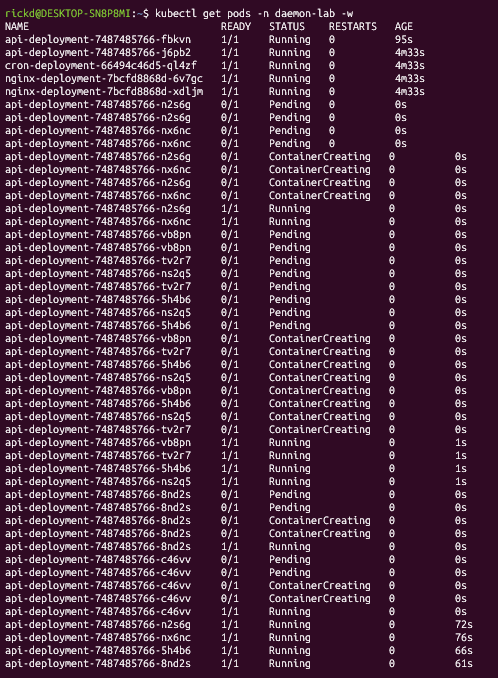
Pending, ContainerCreating e Running.
Por que importa: prova que o HPA criou Pods de verdade, não só mudou um número na tela.
Quem agiu: o ReplicaSet criando e o kube-scheduler decidindo onde cada Pod cabe.
"Por que vários aparecem Pending?" — Porque o nó é único e os Pods competem por CPU; o scheduler coloca o que cabe e o resto espera. Num cluster multi-nó eles seriam distribuídos.
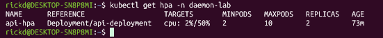
REPLICAS 2, cpu: 2%/50% e 73 minutos de idade.
Por que importa: prova o scale-down: sem carga, o HPA volta ao mínimo e o cluster deixa de gastar recurso.
Quem agiu: o HPA, depois da janela de estabilização de ~5 minutos (para não ficar subindo e descendo toda hora).
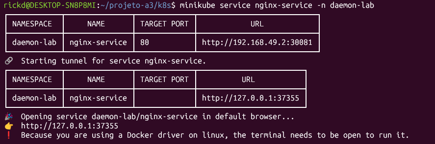
minikube service nginx-service com 192.168.49.2:30081 e o túnel 127.0.0.1:37355.
Por que importa: prova o segundo Service NodePort, o do site — cada aplicação exposta na sua porta.
Quem agiu: o nginx-service + kube-proxy, encaminhando a 30081 do nó para a 80 do Pod.
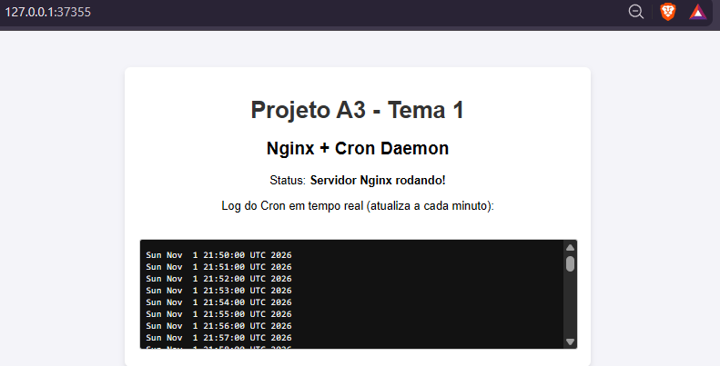
127.0.0.1:37355, com o log do cron acumulando linhas de 21:50 a 21:58.
Por que importa: prova o Nginx rodando como Pod, com o crond escrevendo a cada minuto — e fecha a prova dos três daemons dentro do cluster.
Quem agiu: o nginx (dentro do Pod) servindo a página e o crond do mesmo container gravando o cron.txt.
Antes dele, o Nginx só tinha sido demonstrado via Docker. Com ele, os três daemons ficam provados dentro do cluster: API (Swagger), Nginx (página) e cron (log com várias linhas acumuladas).
Um kubectl get svc -n daemon-lab mostrando os dois Services lado a lado. O nginx-k8s-terminal.png cobre a
informação, mas se a banca pedir "mostre os serviços", tenha o comando pronto para rodar ao vivo em vez de procurar print.
Resumo: o que cada print prova, em uma linha
| Prova | Slide? | |
|---|---|---|
APIrodandoTerminal.png | a API sobe no Python puro | — |
testesCurl.png | a API lê processos do SO | — |
paginaNavegador.png | os 4 endpoints no Swagger | 5 |
testeCurlNavegador.png | o Swagger executa de verdade | — |
imagemDocker.png | a API virou container | — |
imagens-criadas.png | as imagens têm os nomes corretos | — |
teste-conteinerNginx.png | o Nginx roda como container | — |
verificandoDockerNginx.png | o daemon web fica no ar | — |
cronNginxfuncionando.png | o cron dentro do Nginx executou | — |
sitedemostracao.png | Nginx + cron integrados (Docker) | — |
TarefaAgendadaCron.png | o cron isolado grava seu log | — |
5pods.png | o deploy base está no ar | 7 |
ProcessManagerAPI-terminal.png | o NodePort 30080 funciona | 4 |
ProcessManagerAPI.png | a API roda dentro do cluster | — |
hostPID_kubernete.png | a API vê os processos do nó | 6 |
RecriacaoPod.png | self-healing em 9 s | 9 |
hpa.png | o HPA escalou de 2 a 10 | 10 |
replicas.png | os Pods foram criados de verdade | 10 |
replicasVoltando2.png | o scale-down voltou para 2 | 11 |
nginx-k8s-terminal.png | o NodePort 30081 funciona | — |
nginx-k8s.png | Nginx + cron dentro do cluster | 8 |